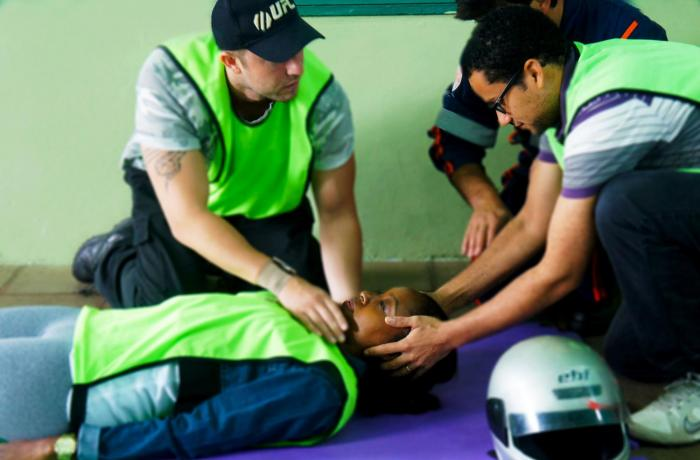

Para que possamos prestar um bom atendimento pré hospitalar, utilizamos de um Mineumônico chamado de XABCDE.
Uma ferramento criada para ajudar o socorrista a iniciar o atendimento de forma eficiente e ordenada para que consiga fazer uma avaliação completa em um curto espaço de tempo e a não esquecer de nada!
Essa ferramenta consisatem em tratar lesões que matam mais rapido para as que matam mais!
Dentro do X temos 3 tipos de hemorragias
Clique aqui para saber mais sobre os tipos de Hemorragias
Nesta etapa da nossa avalição, é importando que se não encontrada nenhuma hemorragia exsanguinante ou se estiver com outro socorrista, é importante que um socorrista se posicione acima da cabeça da vitima apoiando a cabeça da mesma evitando assim que a vitima movimente a cabeça para evitar o agravamento de possiveis lesões na cervical!

Ainda na letra A fazemos tambem a avalição da Perviedade das Vias Aereas do paciente
Na letra A avaliamos:
Alguns procedimentos que podem serem aplicados
Este procedimento (Chin Lift) tem como função alinhar a cabeça da vitima assim liberando a traqueia facilitando a passagem de ar, ja a (Jaw-Thrust) tem como função a abertura da Boca da vitima para melhor visualização em seu interior para uma melhor avaliação em busca de secreções ou corpos estranhos
Nesta etapa vamos avaliar a qualidade da respiração e ventilação do paciente
Aqui nós vamos observar os seguintes itens:
Aqui devemos observar se o torax do paciente ao respirar: